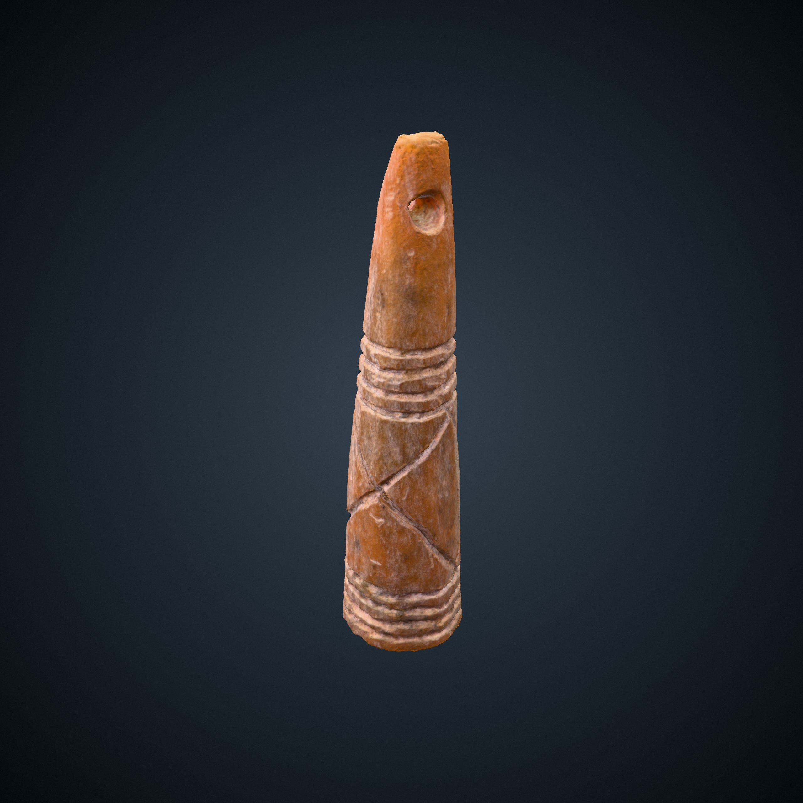

Le culte des reliques dans le monde médiéval attire la foule des fidèles et des pèlerins qui, bien souvent, font de longs voyages pour se recueillir auprès des corps saints.
Le sanctuaire rural de Seclin, éloigné du siège épiscopal (Tournai), nécessitait la présence permanente de religieux afin d’entretenir le lieu sacré et d’accueillir les pèlerins. Les premières sources faisant état de la présence de religieux à Seclin sont toutefois tardives et ne remontent, pour les plus anciennes, qu’au IXe siècle : il y est fait mention d’une « congregatio sancti Piati » (communauté Saint-Piat) localisée dans la région du Mélantois (in pago Medenense).
De ce premier ordre, il subsiste peu de traces écrites et les témoignages de leur présence s'est perdu au fil du temps.
